Project 1: Image Filtering and Hybrid Images
- Implementation

Dark boarder problem.
my_imfilter.m
This is simply a re-implementation of existing Matlab imfilter() function. Instructions for using the my_imfilter is explained in the README. In this implementation, the input image can be single-channel (greyscale), three-channel (color), or even multi-channel images (RGBD for example). By default, the input image is symmetrically padded instead of zero padded. This can avoid the dark boreder problem (see figure on the right).
Instead of manually checking the number of channels in the image, we adopt the arithmetic expands[Ref] mechanism to make our code more concise and more efficient.
for h=1:image_size(1)
for w=1:image_size(2)
receptive_field = image_padded(h:h+2*pad_size(1), w:w+2*pad_size(2), 1:end);
filtered = receptive_field .* filter;
output(h,w,1:end) = sum(sum(filtered, 1), 2);
end
end
Matlab's arithmetic expands mechanism is similar to Python's broadcasting mechanism. Using such mechanism, even though the filter is only a 2D matrix with single channel, it will be implicitly expanded to multiple channels. This makes our code more concise since we do not have to explicitly determine the number of channels as well as multiply the filter to each channels. Based on my experience in Python (Numpy actually), the interpreter can run the code with broadcasting more efficiently. Although there is no evidence showing that Matlab has done some optimization on arithmetic expands, I do a simple experience to show that it does run faster. It takes about 0.6 seconds compared to traditional method that takes about 0.9 seconds, on a 253x287x3 cat.bmp test image. The (probably) only drawback of this mechanism is that it is only supported after R2016b.
[Ref] Matlab's arithmetic expands: https://blogs.mathworks.com/loren/2016/10/24/matlab-arithmetic-expands-in-r2016b/
proj1.m
This script is a simple application of our my_imfilter function. The only parameter we can tweak is the cutoff frequency of the Gaussian filter. The Gaussian filter is basically a low pass filter that blurs the image. As a result, the low-frequency image is the original image filtered by the Gaussian kernel. On the other hand, the high-frequency one is the original image minus the filtered low-frequency image. The final hybrid image is simply the addition of the low-frequency one and the high-frequency one.
- Results
my_imfilter.m
Here are sample results from the proj1_test_filtering.m.

Identity image.

Blurred image.
Large blurred image.

High pass image.
Laplacian image.

Sobel image.
proj1.m image pyramid
Here we show some results from the proj1.m scripts, in which the effect of a hybrid image is shown by image pyramid. We also list the cutoff frequency we tweaked for best visual effect.
1. Cat -> Dog, cutoff-frequency=7


|
2. Bird -> Plane, cutoff-frequency=9
| 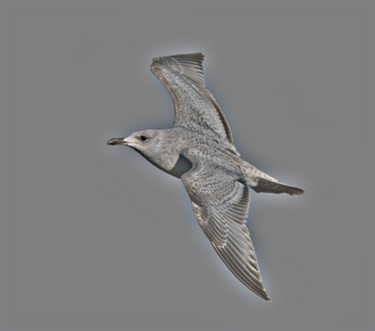 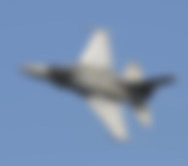 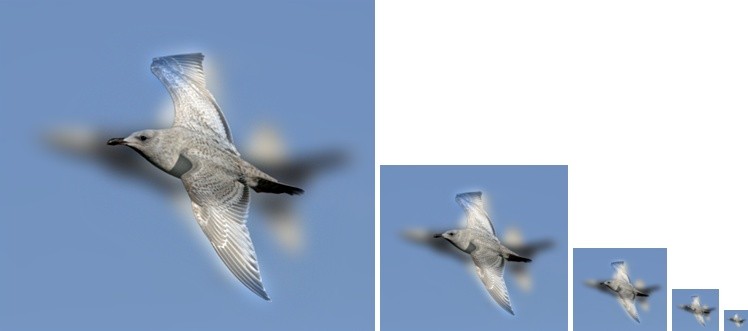 |
3. Motorcycle -> Bicycle, cutoff-frequency=9
| 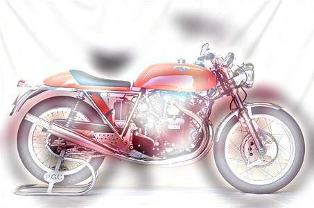 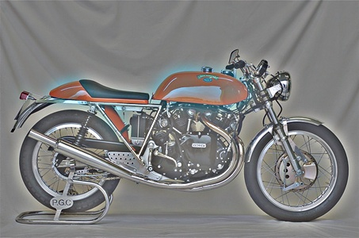 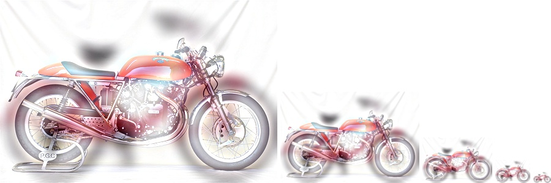 |
3. Fish -> Submarine, cutoff-frequency=4
| 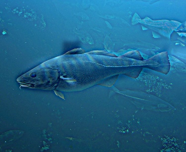 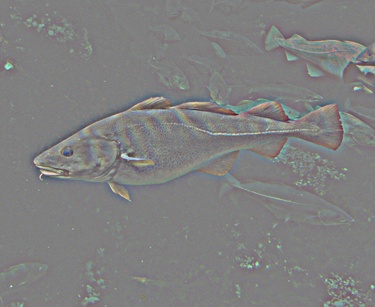 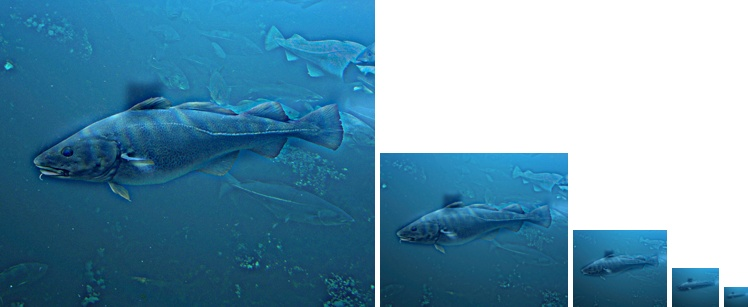 |
3. Einstien -> Marilyn, cutoff-frequency=5
| 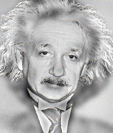 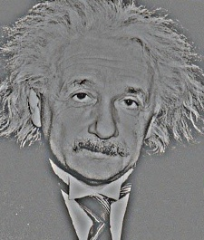 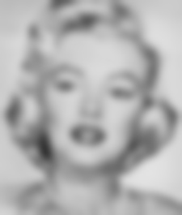 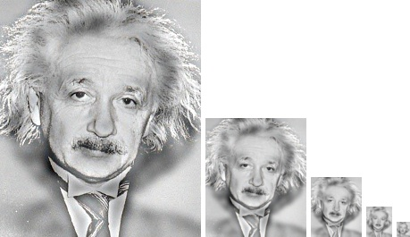 |
When tuning the parameters for best visual effect, we observe some rules of thumb:
- Choice of cutoff frequency
- Choice of low and high frequency images
For the choice of cutoff frequency, we found that when we increase the cutoff frequency, the low-frequency image will be more blurry and the high-frequency will contain more low-frequency details. This is equivalent to weighting more on the high-frequency image and down-weighting the low-frequency one. This in effect delays the show-up of the low frequency image. We choose to let the low frequency image dominate after the third or fourth level of the image pyramid. By tuning the cutoff frequency, we're shifting the border between the high-frequency and low-frequency images.
For the choice of low and high frequency images, in additional to choosing those with high shape similarity, we also found that it is better to choose the image with large blobs of color and less details as the low frequency image and vice versa. It is intuitive since those with large blobs of color and less details intrinsically contains more low level info. As as result, by doing so, we minimize the amount of info loss after image filtering. However, this is not a deterministic factor since the final visual effect is also affected by the color, texture, shape similarity, viewing screen size, and many other complicated factors.